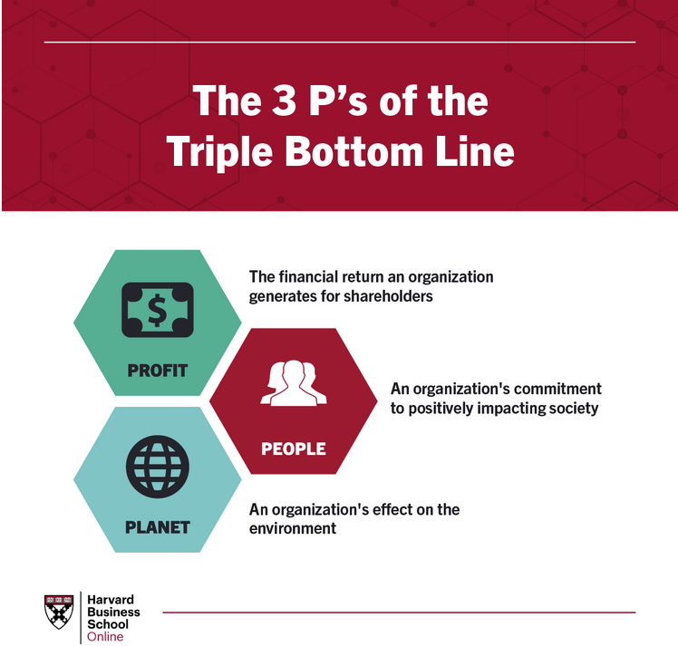

Evaluation of Sustainability Considerations¶
This topic is an ABET required topic transferred from CE 4330 to this course
As you move closer to becoming licensed professionals, you’ll increasingly be asked to consider the long-term impacts of your designs, not just in terms of performance or cost, but also how they affect the environment, society, and future generations.
What is Sustainability?¶
At its core, sustainability is about ensuring that the way we meet our needs today doesn’t compromise the ability of future generations to meet theirs. This principle was popularized by the Brundtland Commission in the 1987 report Our Common Future, which set the stage for modern discussions on sustainability.
Note
The publication of Our Common Future and the work of the World Commission on Environment and Development laid the groundwork for the convening of the 1992 Earth Summit and the adoption of Agenda 21, the Rio Declaration and to the establishment of the Commission on Sustainable Development.
Meeting Present Needs: This refers to addressing the economic, social, and environmental needs of society today. Engineers, for example, must ensure that the infrastructure, technologies, and processes we design can provide for today’s population in terms of energy, water, transportation, food production, and other critical resources.
Without Compromising Future Generations: The second part of the definition emphasizes intergenerational equity. This means that future generations should have access to the same, or better, resources and environmental conditions than we have today. If we deplete non-renewable resources, damage ecosystems, or contribute to pollution and climate change, future generations will face much greater challenges.
Why it matters in engineering: Environmental responsibility, social equity, long-term economic viability.
A New Imperialism
The Brundtland Commission report is perceived by the Third World as green imperialism. Green imperialism (also called eco-imperialism, eco-colonialism, or environmental imperialism) is a derogatory epithet alluding to what is perceived as a Western strategy to influence the internal affairs of mostly developing nations in the name of environmentalism. Circa 2024 one can argue the West is kind of choking on its “own” vision of a Green Future.
Important
Sustainability isn’t just about “going green” or minimizing waste—it’s about making sure our solutions are resilient, efficient, and equitable over the long term. As engineers, you’re not only solving today’s problems, but you’re also designing for the future.
So how do we balance today’s needs with future considerations? Here’s what it looks like when applied to engineering and design:
Resource Efficiency:¶
We need to use resources efficiently—whether it’s energy, raw materials, or water—so we aren’t depleting them faster than they can be replenished. In practice, this might involve designing buildings that use less energy, creating systems that reuse or recycle materials, and optimizing industrial processes to minimize waste.
Renewable Resources:¶
Shifting from finite resources (like fossil fuels) to renewable resources (like solar or wind energy) is key. This ensures that we don’t run out of essential resources over time and helps mitigate environmental damage like pollution or habitat destruction.
Minimizing Environmental Impact:¶
Sustainable engineering focuses on reducing harmful effects on ecosystems, air and water quality, and the climate. This includes designing products and processes that emit fewer pollutants, minimize carbon footprints, and preserve biodiversity.
Long-Term Thinking:¶
Designing for the long term means thinking beyond immediate costs or performance. We must consider how a project or product will perform throughout its entire lifecycle—from the extraction of materials and manufacturing to its use and eventual disposal. Sustainable design anticipates future needs and challenges, such as population growth, urbanization, and climate change, so that our solutions remain viable and efficient for decades or centuries to come.
Balancing the Three Pillars:¶
Economic Viability: Ensuring that solutions are cost-effective not just in the short term, but over their entire life cycle.
Social Equity: Ensuring that today’s solutions are equitable, benefiting all segments of society without disproportionately affecting any group or region.
Environmental Stewardship: Preserving ecosystems, reducing pollution, and using renewable energy and materials to maintain the health of our planet.
Setting Policy
How do we make decisions today that not only solve current problems but also ensure we leave the world in better shape for future generations?
Why Sustainability Matters in Engineering¶
Sustainability in engineering is no longer a choice or an afterthought—it’s a necessity. The world is facing significant challenges such as climate change, resource depletion, environmental degradation, and rapid urbanization. Engineers are at the forefront of addressing these issues through the design and development of sustainable systems, infrastructure, and technologies. Sustainability matters in engineering because it ensures that present needs are met without compromising the ability of future generations to meet their own needs. This concept has profound implications across economic, environmental, and social dimensions.
Environmental Responsibility¶
The most immediate reason sustainability matters in engineering is the need to minimize environmental harm. Engineering projects often have a significant environmental footprint, from energy consumption to material usage and waste generation. By integrating sustainable practices into engineering processes, we can:
Reduce carbon emissions: The engineering sector, particularly in construction, energy, and manufacturing, contributes to a large portion of global carbon emissions. Sustainable engineering seeks to lower emissions through energy-efficient designs, the use of renewable energy sources, and low-carbon materials.
Conserve natural resources: Engineers are responsible for designing systems that use resources more efficiently, such as water-saving technologies, sustainable agriculture systems, and recyclable materials in manufacturing.
Prevent environmental degradation: Infrastructure and industrial activities can lead to habitat destruction, water pollution, and air quality deterioration. Sustainable engineering aims to mitigate these impacts by adopting eco-friendly designs and practices, such as green buildings, clean energy systems, and responsible waste management.
Long-Term Economic Viability¶
Sustainability in engineering also makes economic sense. While some sustainable technologies and practices may involve higher upfront costs, they often result in long-term savings and financial benefits. Sustainable engineering practices contribute to economic viability in several ways:
Energy efficiency: Sustainable engineering projects, such as green buildings and efficient transportation systems, consume less energy, resulting in lower operational costs over time.
Resilience to future risks: Sustainable designs often include considerations for long-term environmental changes, such as climate resilience, disaster mitigation, and adaptability to resource scarcity. By investing in sustainable solutions now, communities and businesses can avoid costly repairs, retrofits, or replacements in the future.
Resource optimization: Sustainable engineering promotes the circular economy, where products and materials are designed for reuse, recycling, and minimal waste. This reduces the dependency on raw materials and minimizes waste disposal costs.
In essence, sustainable engineering ensures that economic growth does not come at the expense of environmental degradation or resource depletion. It fosters innovation in creating technologies that support both profitability and environmental responsibility.
Ethical Responsibility and Global Impact¶
Sustainability in engineering is deeply tied to the ethical responsibility of engineers to safeguard the well-being of people and the planet. Engineers are not only problem-solvers but also custodians of the Earth’s resources. As such, they must consider the ethical implications of their work, both locally and globally.
Intergenerational responsibility: Engineers have a duty to future generations to create solutions that do not exhaust or degrade resources for short-term gain. Sustainability ensures that technological advancement continues without leaving future generations with environmental crises or depleted ecosystems.
Global reach: The actions of engineers in one region can have far-reaching global consequences. For example, carbon emissions from energy production contribute to global climate change, affecting ecosystems and communities worldwide. Engineers working in energy, transportation, agriculture, and other critical sectors must therefore adopt global perspectives and consider the long-term consequences of their designs and technologies.
Innovation and Competitiveness¶
Sustainability drives innovation in engineering. The need for more efficient, resource-conscious, and environmentally friendly solutions fosters creativity and pushes the boundaries of technological development. Sustainable engineering encourages:
New materials and technologies: Engineers are developing sustainable materials, such as biodegradable plastics, energy-efficient building materials, and lightweight composites for transportation. These innovations help reduce environmental impacts while improving performance.
Renewable energy solutions: The shift toward sustainability has led to breakthroughs in renewable energy technologies, such as solar, wind, and geothermal energy systems, which are now more efficient and cost-competitive than ever before.
Green design and smart systems: Engineers are incorporating sustainability into the design of smart cities, energy grids, and infrastructure systems, using digital technologies to optimize energy use, reduce waste, and improve the resilience of urban environments.
These advancements give companies and countries that prioritize sustainability a competitive edge in the global marketplace, where consumers and governments alike are increasingly demanding environmentally responsible solutions.
Summary
Sustainability matters in engineering because it is the foundation for a future where technology and development can thrive without depleting the Earth’s resources or harming the environment. It enables engineers to balance economic viability, social equity, and environmental responsibility in ways that benefit both current and future generations. Whether through reducing carbon emissions, improving resource efficiency, promoting social inclusivity, or driving innovation, sustainability is integral to the ethical and practical success of engineering. By adopting sustainable practices, engineers can help shape a world that is both prosperous and livable for all.
The Triple Bottom Line¶
When evaluating sustainability in your designs, there’s a model called the Triple Bottom Line that we use: People, Planet, and Profit.

People: Social impacts—How does your design impact communities and public health? One component of the triple bottom line highlights a business’s societal impact, or its commitment to people.
It’s important to make the distinction between a firm’s shareholders and stakeholders. Traditionally, businesses have favored shareholder value as an indicator of success, meaning they strive to generate value for those who own shares of the company. As firms have increasingly embraced sustainability, they’ve shifted their focus toward creating value for all stakeholders impacted by business decisions, including customers, employees, and community members.
Some simple ways companies can make an impact on people—and serve future generations—include ensuring fair hiring practices and encouraging volunteerism in the workplace. They can also look externally to effect change on a larger scale. For instance, many organizations have formed successful strategic partnerships with nonprofit organizations that share a common purpose-driven goal.Planet: Environmental impacts—What is the environmental footprint of your project? Are you considering renewable resources or minimizing waste? Another component of the triple bottom line is concerned with making a positive impact on the planet.
Since the birth of the Industrial Revolution, large corporations have contributed a staggering amount of pollution to the environment, which has been a key driver of climate change and environmental concerns. A report by the International Energy Agency found that the global energy industry released 135 million tonnes of methane into the atmosphere in 2022.
While businesses have historically been the greatest contributors to climate change, they also hold the keys to driving positive change. Many business leaders are now recognizing their social responsibility to do so. This effort isn’t solely on the shoulders of the world’s largest corporations—virtually all businesses have opportunities to make changes that reduce their carbon footprint. Adjustments like using ethically sourced materials, cutting down on energy consumption, and streamlining shipping practices are steps in the right direction toward long-term sustainability.Profit: Economic impacts—How will your design contribute to long-term economic benefits? In a capitalist economy, a firm’s success most heavily depends on its financial performance, or the profit it generates for shareholders. Strategic planning initiatives and key business decisions are generally carefully designed to maximize profits while reducing costs and mitigating risk.
In the past, many firms’ goals have solely focused on economic impact and growth. Now, purpose-driven leaders are discovering they have the power to use their businesses to effect positive change in the world without hampering financial performance. In many cases, adopting sustainability initiatives has proven to drive business success.
Case Study 1: Sustainable Building Design¶
Speaker: Let’s look at an example: the design of a sustainable building. Engineers today are incorporating green materials, energy-efficient systems, and smart technology. One critical aspect is using renewable energy sources like solar panels or energy-efficient HVAC systems. This reduces operational costs over time and minimizes the building’s environmental footprint.
Key Points:
Energy Efficiency: Incorporating high-efficiency systems that reduce long-term operational costs.
Resource Conservation: Using materials that are renewable, recycled, or have low environmental impacts.
Innovation: Incorporating smart technologies for energy monitoring and resource management.
Case Study 2: Sustainable Water Management¶
Speaker: Water resource management is another area where sustainability is crucial. Take a flood control project, for example. Here, engineers need to consider ecosystem health, long-term climate projections, and community safety.
Key Points:
Minimizing Environmental Impact: Sustainable water management involves designing systems that protect natural water sources and reduce the risk of flooding, while promoting ecological balance.
Resilience: Designing with future climate scenarios in mind ensures the system is resilient to changes in weather patterns.
Socio-economic Balance: Projects should benefit the community while also being economically feasible and environmentally sound.
Sustainability in Engineering Design – Key Evaluation Metrics¶
Some key evaluation metrics for sustainability in design:
Climate risk: Climate risk was reported as a newly emerging environmental metric as companies account for the changing environment and the physical risks of climate change. The GreenBiz report data shows 86% companies now publish a sustainability report and a large majority of these companies are acknowledging their exposure to climate-related risks. Of these, 82% reported regulatory transition risks and 79% described physical risks from climate change in their reports that could negatively impact productivity and success.
As the world’s response to climate change remains uncertain, forward-looking scenario-based assessments of transitional and physical climate risk, such as those recommended by the Task Force on Climate-related Financial Disclosures (TCFD), can help companies develop risk mitigation strategies across corporate asset locations, supply chains, and product life cycles.Carbon emissions: The Paris Agreement is a landmark international accord that was adopted by nearly every nation in 2015 to address climate change and its negative impacts. The agreement aims to substantially reduce global greenhouse gas emissions in an effort to limit the global temperature increase to 2° Celsius above pre-industrial levels by 2050.
The emission of carbon dioxide (CO2) and other pollution that results from the burning of fossil fuels used to generate electric power, provide power for transportation (cars, trucks, and air travel), and heat homes and buildings is the major factor contributing to climate change. Efforts to improve energy efficiency, migrate to renewable energy, and shift from coal to methane provide solutions to reducing harmful greenhouse gas emissions.
Companies are beginning to take efforts to reduce emissions, such as migrating from coal to natural gas, which is 85% more efficient in producing electric power. As companies make these migrations and reduce emissions, metrics and reporting will be the only reliable factor that tells the story of change and ensures companies can reach their target goals.Energy improvements: Energy use is the largest factor impacting environmental sustainability and is a direct contributor to greenhouse gas emissions and other compounds that are detrimental to the environment. Therefore, every company’s energy improvement matters and so do the metrics used to track this energy consumption. Companies are beginning to implement alternate, renewable sources of energy into their operations such as solar energy and wind power.
Companies are also utilizing different methods such as ESG platforms and IoT (Internet of Things) sensors to accurately measure and track energy consumption, a dynamic process that provides an analytical framework to monitor, measure, and catalog data.Water reduction: Water is a critical and primary metric because of its prevalent, daily usage within most companies and facilities. The U.S. Energy Information Administration (EIA) estimated that the 46,000 large commercial buildings (200,000+ square feet) in the U.S. used about 359 billion gallons of water (980 million gallons per day) in 2012.
Beyond water reduction, the loss of water from leaking pipes or water distribution lines must be considered, along with water pollution, which was added as a new metric in the GreenBiz report. Water pollution is measured by the “total natural capital cost of the environmental impacts from heavy-metal and pesticide pollution or from excess fertilizer use causing algal blooms.”
Unfortunately, the report also stated company water use has averaged a 9% yearly increase since 2015, both for U.S. companies and globally, and water pollution costs have nearly doubled since 2014. Utilizing goal-oriented metrics to monitor water quality, consumption, and leakage will play a crucial role in conserving water as well as protecting the health and safety of people and the environment.Waste diversion: Waste management is a broad category, including food waste, agricultural and animal waste, medical waste, radioactive waste, hazardous waste, industrial non-hazardous waste, construction and demolition debris, extraction and mining waste, oil and gas production waste, fossil fuel combustion waste, and more.
To better understand waste, companies are beginning to use circular frameworks as a tool to assess and track the full scope of material flows in their operations (see link to LCA below). In 2020, the Cradle to Cradle Products Innovation Institute offered a set of metrics tailored specifically for the circular economy, which included considerations of sourcing such as recycled or renewable content, design of intentional end-of-life strategy such as disassembly, recoverable content such as recyclability or biodegradability, and investment in infrastructure to enable a circular economy.
Countries, cities, and companies that can commit to circularity goals and waste measurement frameworks will enable data-driven decision-making, progress-tracking, and accountability that reduces waste, creates jobs, and adds economic value while supporting the environment.
Important
Energy Efficiency: How much energy will the system or product consume over its lifetime? Are there ways to reduce this energy usage?
Resource Use: Are the materials being used renewable, or can they be recycled?
Waste and Emissions: What waste products or emissions does your design produce? Can you minimize or eliminate them?
Lifecycle Costs: Are you only focusing on upfront costs, or are you considering the total cost of ownership over the project’s life?
Impact on Communities: How does your design improve quality of life? Does it provide long-term benefits to the community?
Tools and Frameworks for Evaluating Sustainability¶
Speaker: There are several tools and frameworks engineers use to evaluate sustainability. These help in assessing the environmental, social, and economic impacts of designs. Some of the widely used frameworks include:
Life Cycle Assessment (LCA): A method for evaluating the environmental impacts of a product or system from cradle to grave. It is defined in the The ISO 14000 family of standards by the International Organization for Standardization (ISO) relate to environmental management that exists to help organizations (a) minimize how their operations (processes, etc.) negatively affect the environment (i.e. cause adverse changes to air, water, or land); (b) comply with applicable laws, regulations, and other environmentally oriented requirements; and (c) continually improve in the above.
LEED Certification: A framework for sustainable building practices. Concept is administered by the US Green Building Council (although other colors of buildings are acceptable for LEED certification)
Sustainability Rating Systems: These are used in civil and environmental engineering projects to assess the sustainability of large-scale infrastructure. There are a variety listed below, mostly building related, but undoubtably broader than just a structure.
Challenges in Implementing Sustainability¶
Implementing sustainability in engineering is not without its challenges. There are trade-offs between cost, performance, and sustainability. But sustainability isn’t about perfection—it’s about progress.
Cost Constraints: Sustainable materials or technologies may initially cost more, though they often save money in the long run.
Regulatory Barriers: Regulations sometimes lag behind technological advancements, making it harder to implement new sustainable practices.
Cultural Resistance: Change can be difficult in industries accustomed to traditional methods. Part of your role as an engineer will be advocating for sustainability.
Professional Ethics and Sustainability¶
Sustainability is deeply rooted in engineering ethics. The NSPE Code of Ethics stresses the need for engineers to “hold paramount the safety, health, and welfare of the public.” Sustainability directly ties into this ethical obligation.
Ethical Responsibility: Engineers must ensure that their designs do not deplete resources or harm the environment in ways that compromise the ability of future generations to thrive.
Leadership in Sustainability: Engineers are in a unique position to lead efforts toward sustainable development.
Case Study 3: Renewable Energy and Engineering Ethics¶
Consider renewable energy projects, where sustainability and engineering ethics clearly align. Engineers working on wind, solar, or hydropower projects are often guided by the dual goals of reducing greenhouse gas emissions and providing clean energy to communities. These projects embody both technical ingenuity and a commitment to public welfare.
Reducing Carbon Footprint: Renewable energy projects help decrease global reliance on fossil fuels, supporting environmental sustainability.
Public Health Benefits: Cleaner air, reduced emissions, and long-term energy security contribute to healthier communities.
Risks: Dead birds (wind), Viewshed abomination(wind+solar), Navigation impediments (wind,solar, hydropower), waste of arable land (solar) etc.
Important
As you approach your professional careers, remember that sustainability isn’t just an add-on to engineering—it’s a fundamental consideration. You’ll be designing systems and structures that will impact the environment and society for decades to come. Incorporating sustainability into your designs ensures that you contribute to a future that is resilient, equitable, and environmentally responsible. Sustainability in engineering isn’t just a buzzword—it’s essential. Your designs can make a difference in the long-term health of the planet and society. As future licensed engineers, it’s your responsibility to lead with sustainability in mind.
Note
To do:
Include graphs or images showing the correlation between design decisions and public health outcomes.
Delete this note when completed
Is Sustainability Thermodynamically Possible?¶
Before we conclude, let’s consider a provocative question: Is sustainability even thermodynamically possible?
At first glance, this might seem contradictory. After all, according to the Second Law of Thermodynamics, any process in a closed system increases the total entropy—meaning disorder or energy loss is inevitable. So, in a purely thermodynamic sense, sustaining an ideal, completely waste-free, and energy-efficient system forever seems impossible.
But does that mean sustainability is a lost cause? Let’s discuss!
The Second Law of Thermodynamics:¶
In closed systems, entropy always increases, leading to energy dissipation and inefficiencies.
This law might suggest that nothing can last forever without energy inputs or degradation—so, theoretically, absolute sustainability is not achievable.
Open vs. Closed Systems:¶
Earth is not a perfectly closed system—it receives energy from the sun, allowing for processes like photosynthesis and renewable energy generation.
Sustainability in practice involves creating systems that are highly efficient, minimizing waste and resource use, but not eliminating entropy completely.
Energy and Resource Inputs:¶
The key is recognizing that sustainability isn’t about creating perpetual motion machines—it’s about smart design, where energy inputs are renewable, and resources are reused or recycled as much as possible.
Even though some energy loss is inevitable, by relying on renewable energy sources (like solar, wind, and hydro), we can maintain a balance that mimics natural processes, like ecosystems that recycle nutrients.
Or we could apply science computing an Exergy Footprint ExF, defined (Sciubba, 2012) as the amount of primary exergy (in J) globally consumed over the life of a commodity, including material, energy, labor, capital and environmental remediation costs and calculated on a life-time basis.
Pragmatic Sustainability:¶
Sustainability is about managing resources intelligently—minimizing the depletion of non-renewable resources and reducing waste.
It doesn’t mean we can entirely prevent energy loss or resource use, but we can slow down the rate at which we consume resources and ensure a regenerative approach.
Important
Given the inevitability of entropy, how can we still strive for sustainability in engineering design? What role do renewable resources and efficiency play in this balance?
A reference listed below has a philosophically important conclusion (Sciubba, 2021) “It is rather clear that the socio-economical interpretation must be supported by the thermodynamic one, in the sense that if a system “uses” the incoming exergy flow in a way that leads to a total net depletion rate of (fossil or renewable) exergy sources, no societal organizational form can survive in the long run unless new exergy inputs are provided at a sufficient rate. It is true that the specific form of the societal organization may affect the exergy depletion rate, but this does not imply that such a “minimum exergy consumption” society may be acceptable from an ethical point of view: this decision implies a value choice and is outside of the realm of Thermodynamics. Studies that do not separate these two issues are therefore bound to reach wrong and misleading conclusions.”
References¶
OpenAI (2024). Prompt: “Can you help me prepare a short script (for 40 minute presentation) on “Evaluation of Public Health Considerations” in the context of engineering design? The audience is engineering students about 4 years away from license eligibility?”. ChatGPT-4.0. URL
https://chatgpt.com/c/66e1f0a5-21cc-800d-8b5a-ee9d9e8d2835
Note
“The OpenAI URL provided in references helps retrieve specific content shared, but information is not publicly recoverable unless required by legal obligations.”
Social Equity and Well-being¶
Sustainability also matters in engineering because of its impact on social equity and human well-being. Sustainable engineering promotes inclusivity and strives to improve the quality of life for all people, not just those with immediate access to resources or infrastructure. Considerations for social sustainability include:
Access to resources: Sustainable engineering ensures equitable access to critical resources like clean water, energy, transportation, and housing, especially for underserved or marginalized communities. This is particularly important in developing regions where engineering solutions can help alleviate poverty and improve living standards.
Health and safety: Sustainable engineering designs minimize pollution, reduce waste, and promote the use of non-toxic materials, leading to healthier environments. Public health benefits arise from cleaner air, safer water, and the reduction of hazardous waste, ultimately leading to longer and healthier lives.
Inclusive infrastructure: Sustainable infrastructure projects consider the needs of all members of society, including vulnerable groups. This can be seen in the design of accessible public spaces, pedestrian-friendly cities, and sustainable transportation systems that reduce dependency on fossil fuels while promoting mobility for everyone.
In this context, sustainability in engineering is about more than just preserving the environment—it’s about ensuring that technological progress benefits society equitably and enhances human well-being.